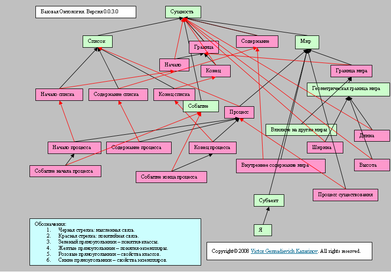

Привожу цитаты из книги "Общение с ЭВМ на естественном языке".
Эти правила лежат в основе реализации программы AIAssistant.
(стр. 133)
3.2. Модель окружающей среды. Исходные понятия.
3.2.1. Основные понятия. Рассмотрение основ начнем с понятия "сущность". Под сущностью будем понимать объекты, отношения, множества, ситуации, события, моменты времени и т.п. Другими словами, не существует ничего, что не являлось бы сущностью. В процессе описания выделим из всего множества сущностей те, которые будут нас интересовать.
Универсальное множество. Представляется удобным рассматривать все сущности в качестве элементов некоторого универсального множества U. Во избежание парадоксов само множество U не будем считать сущностью.
(Prof1983: С последним утверждением я не согласен. Я намерен в программе каждой сущности назначать уникальный числовой идентификатор. Идентификатор будет уникальным в пределах одной базы данных. И множеству также будет назначаться уникальный идентификатор. То есть множество тоже будет сущностью.)
Временное множество. Множество всех моментов времени, являющееся подмножеством и элементом множества U, назовем временным множеством (T). Важность этого множества очевидна, так как в окружающем мире все сущности в U рассматривается как существующая (в реальном или гипотетическом мире) по отношению к некоторому непрерывному подмножеству T. Будем обозначать Ut множество всех сущностей, существующих во время t.
---
В Базовой онтологии 0.0.3 есть понятие "Процесс". Оно определено как один из базовых элементов для описания окружающей среды.

Базовая онтология 0.0.3
Опубликовано Prof1983 в 06.02.2009 - 15:11
© AIKernel 2011
01.05.2011 - 01.05.2011